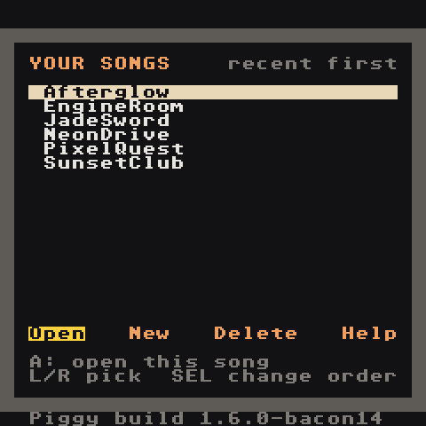
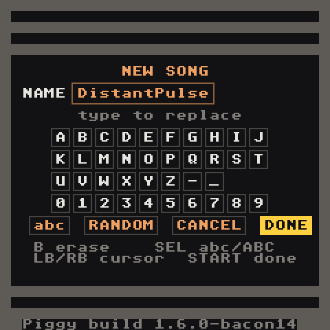

Install
What you need
- An Anbernic RG Nano (FunKey-OS)
- A way to copy files to its SD card: USB cable (the Nano shows up as a drive) or an SD card reader
- The build zip
lgpt-rgnano-test-build.zip(from the repository's GitHub Actions artifacts, or built yourself — see Developer Guide)
Copy the files
The zip contains:
lgpt-rgnano/
├── lgpt-rgnano.opk the app
├── Tracks/ demo songs (lgpt_Afterglow, lgpt_NeonDrive, ... one per genre)
├── Samples/ sample packs (keys, strings, drums-808, ...)
└── LGPT-Guide/ this guide, as Markdown files
Put them on the SD card like this:
| From the zip | To the SD card |
|---|---|
lgpt-rgnano.opk |
Native games/lgpt-rgnano.opk |
Tracks/lgpt_* folders |
Applications/Tracks/ |
Samples/ pack folders |
Applications/Samples/ (add your own .wav files there too) |
LGPT-Guide/ |
Applications/LGPT-Guide/ (optional: the same guide is built into the app under Help) |
Create Applications/Tracks and Applications/Samples if they don't exist.
On the device these are /mnt/Applications/Tracks and /mnt/Applications/Samples.
Launch
Open Native games → LGPT RG Nano. The Your Songs list appears. Up/Down picks a song, Left/Right picks a button, A runs it:

| Button | Does |
|---|---|
| Open | open the highlighted song (try NeonDrive) |
| New | start an empty song with the synth kit ready to play |
| Delete | delete the highlighted song (asks first, starts on No) |
| Help | this whole guide, built in: pick a topic and read it on the device |
The Menu/Power button opens the app menu, where Save and quit is the safe way out.

New opens with a free random name already filled in and DONE highlighted, so A creates the song straight away. To pick your own name see Controls.
Updating
Replace Native games/lgpt-rgnano.opk with the new one. Your songs in Applications/Tracks are not touched.
From a PC with this repository, tools/install-rgnano.ps1 builds, packages and installs everything onto a connected RG Nano in one step.
Where things are saved
| What | Where |
|---|---|
| Songs | Applications/Tracks/lgpt_<name>/lgptsav.dat (Project screen → Save Song) |
| Samples used by a song | Applications/Tracks/lgpt_<name>/samples/ |
| Exported audio | inside the song folder: mixdown.wav or channel0.wav…channel7.wav |
| Diagnostic log | Applications/lgpt-rgnano.log |